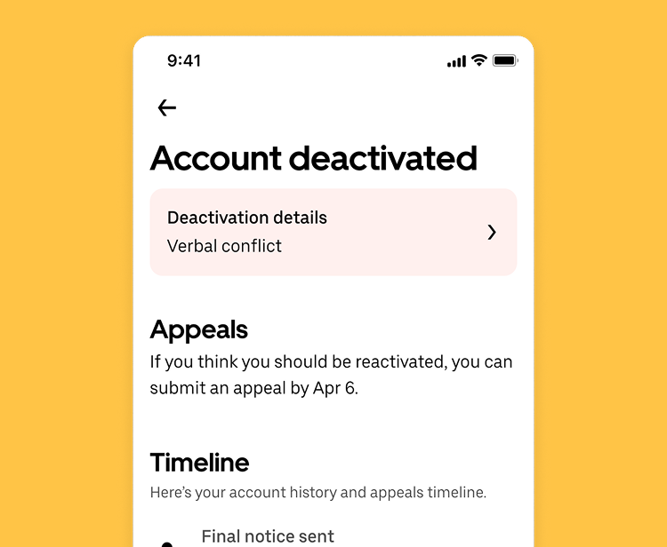

Review Center allows Uber Drivers to better understand why they were deactivated, review the provided information, and use all available tools to properly build a case for their reactivation appeal.

- Role
- Lead Product Designer
- Year
- 2025
- Company
- Uber
Review Center allows Uber Drivers to better understand why they were deactivated, review the provided information, and use all available tools to properly build a case for their reactivation appeal.
The Problem
Enterprise pharmacies were managing 200–400 medication reviews per day with no centralized system. Work was spread across email threads, PDF printouts, and disconnected EHR screens. Reviews were getting lost, duplicated, or approved without full context — a compliance and patient safety risk.
The engineering team had built a review queue, but adoption was critically low. Users were abandoning the tool and reverting to their old workflows. I was brought in post-launch to diagnose and redesign.
"The first version was a list. The real need was a workflow — a fundamentally different design challenge."
Research & Diagnosis
I ran a week of guerrilla testing with 8 existing users and 3 non-users. The core issues:
- The queue had no concept of priority — every review looked equally urgent.
- Approving a review required navigating to 3 separate screens for full context.
- No indication of who else had touched a review or what actions were pending.
- The UI broke completely at the screen sizes used at pharmacy workstations (1280px wide).
Design Solution
I redesigned the Review Center around three core mental models: triage, review, and act. The new layout uses a master-detail pattern — a prioritized queue on the left, full review context on the right — eliminating all context-switching.
Priority indicators use a combination of time elapsed, patient acuity flags, and regulatory deadlines to surface the most critical reviews first. Inline approval actions let pharmacists complete a full review cycle without leaving the screen.
A collaboration layer shows who has viewed or commented on each review in real time, preventing duplicate work and creating accountability without adding a separate notification system.
Outcome
- Tool adoption increased from 34% to 91% within 60 days of re-launch.
- Average review completion time reduced by 58% (from 11 min to 4.6 min).
- Compliance audit pass rate improved from 78% to 99.2%.
- Support tickets related to review workflow dropped by 74%.